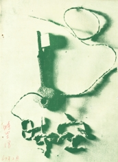

《時空》第十八期
目錄
會長的話
熊 怡
2
與黃教授一夕談
記 者
6
憶當年話新生
B. H.
9
愛因斯坦
張達文譯
12
鬼魂論
張 春譯
14
？
趙
16
世界多美麗
文幼姚
25
浮生夢
悟 空
34
Oh! Girl.
涌 泉
39
為伊消得人憔悴
斷腸人
30
追，追？追！
一二三
18
你要爬山嗎？
示 羊
31
在那沒有雲的地方天是藍色的
絲 竹
22
感覺
方 圓
20
赴約
鳳 凰
40
小青蛙的回憶
小呆呆
32
神話
Fourier
28
那天
一九七一
42
國術物理談
武 痴
44
解析力學的思想史
趙 譯
60
電子的相對論
吳詩聰
57

出版者：台大物理學會
印刷廠：梅枝圖書印刷打字文具有限公司
出版日期：民國六十四年二月
台大訓導處登記第209號